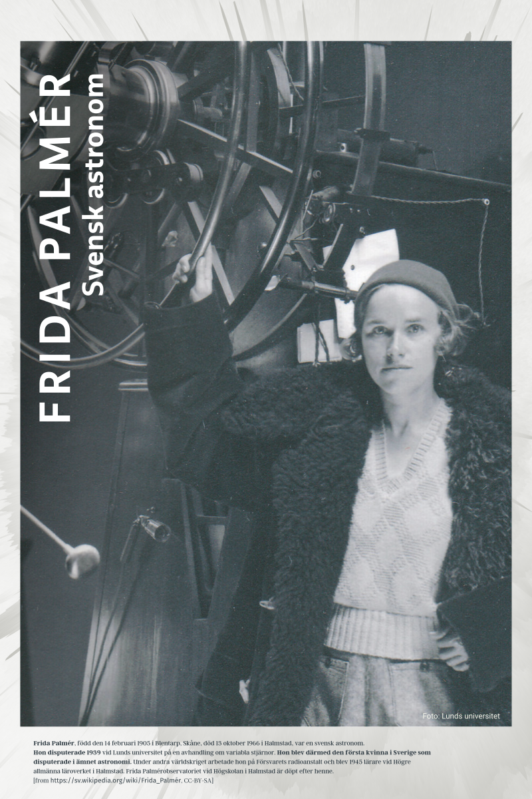
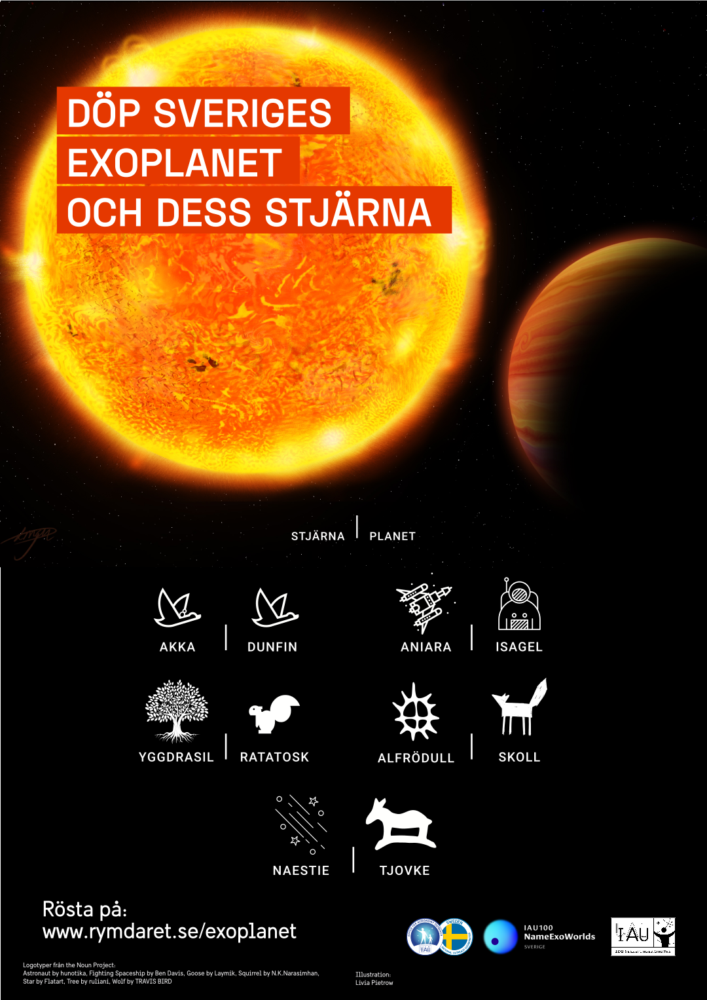
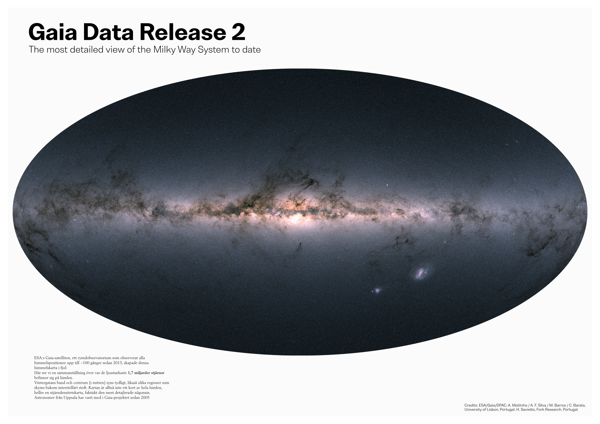
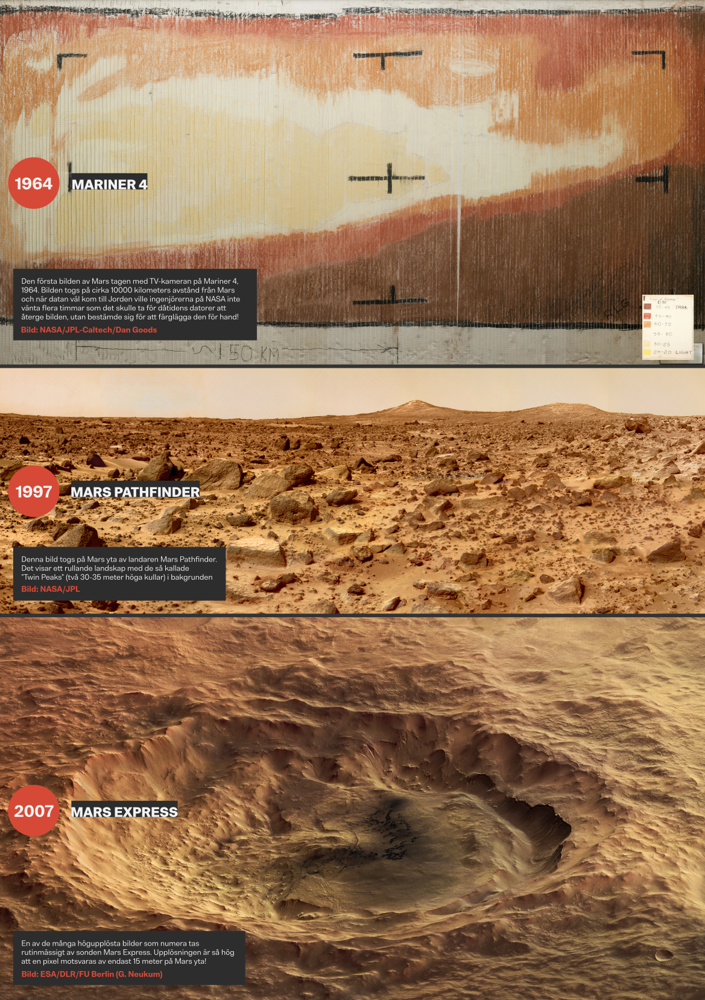
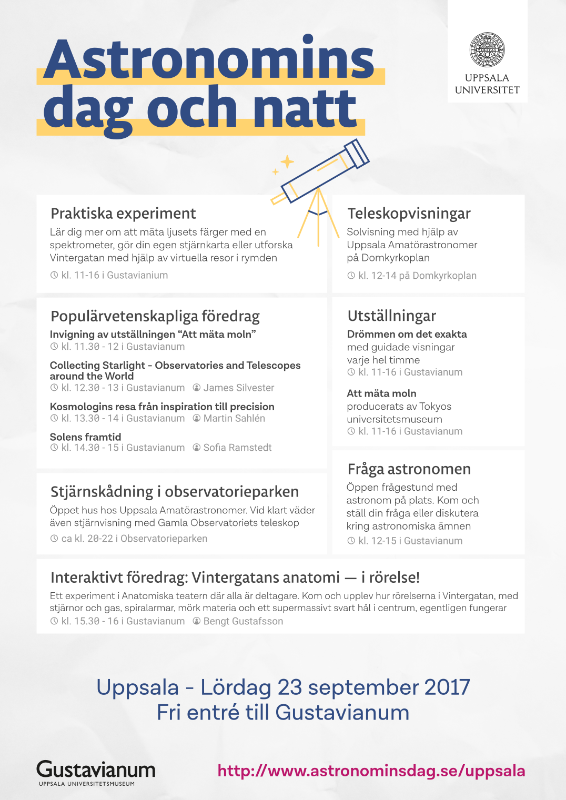
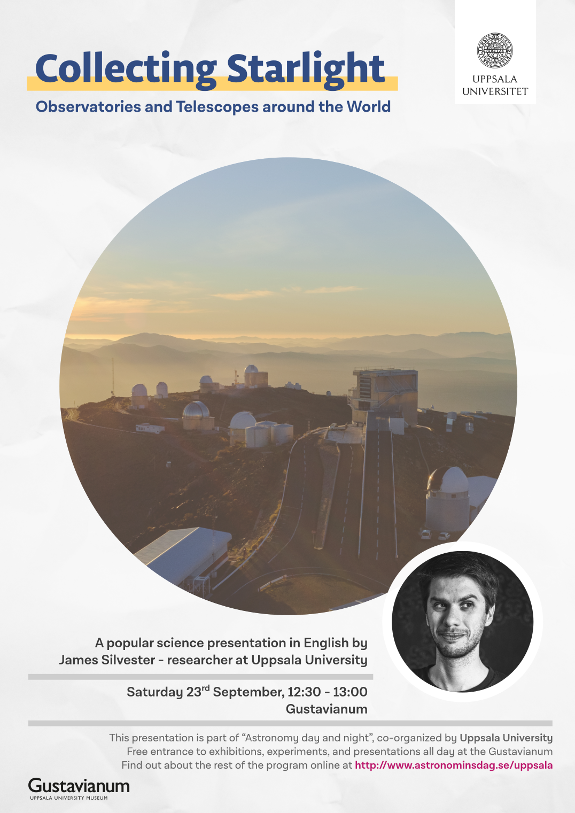
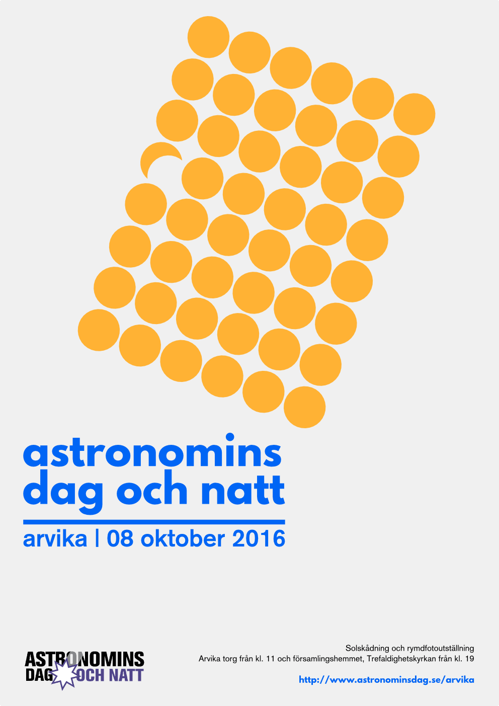
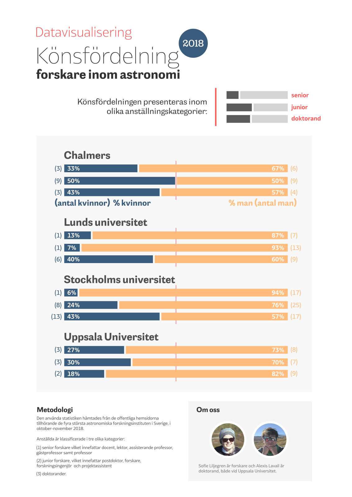
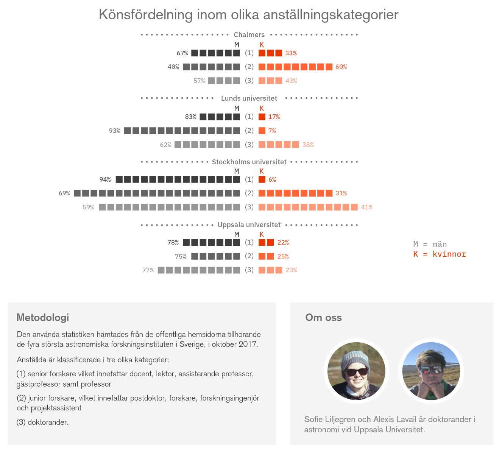

about
Interests
A bunch of unsorted keywords reflecting some of the things I do or take interest in.
feminism, environment, hiking, vegetables, democracy, beer-brewing, analog photography, anticipation books, world literature, cycling, trip-hop, post-rock, nature, mountains, cross-country skiing, stars, listener-supported radios, baking pizzas, magnetic fields, dystopias, space, astronomy, sharing is caring, design, typography.
Design
Some of my duties at Uppsala University have been to design websites and posters for conferences and outreach events. Some of them, together with personal designs, are shown below.
Websites
- Cool Stars 19: website for the Cool Stars 19 conference in Uppsala.
- Astronomdagarna 2015: website for the Swedish astronomy days hosted in Uppsala.
- AMOSAE: website for the alumni association of the MSc in Astronomical and Space-based engineering, hailing from the Observatoire de Paris.
Posters







Dataviz

